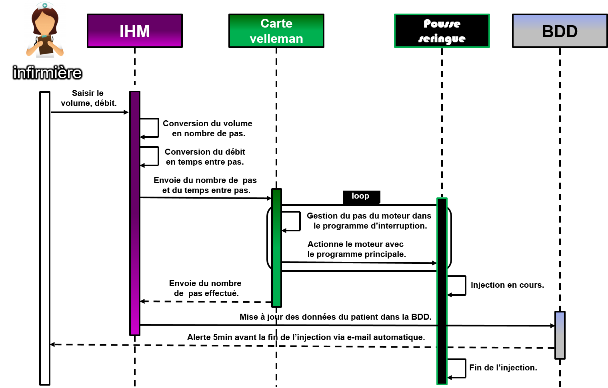
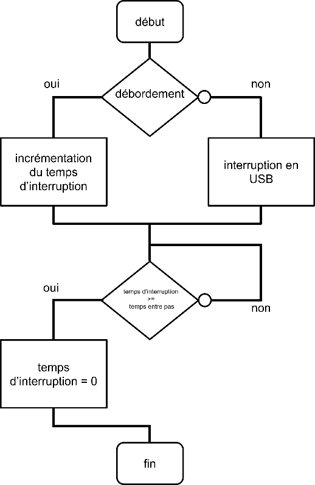
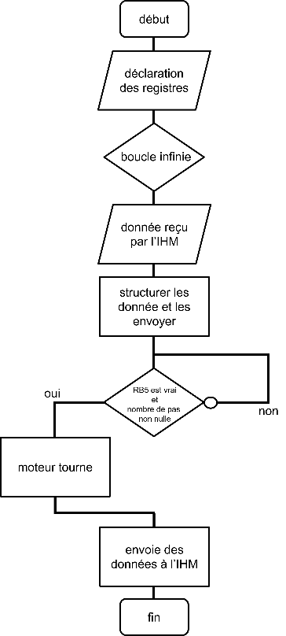

Durée : Février 2021 - Juin 2021
Nombre d'étudiants : 3
Le projet se nomme « pousse seringue ».
C’est un projet du domaine hospitalier qui consiste à utiliser le système pousse seringue pour les personnels soignants sur des raisons diverses et variés.
Ce pousse seringue est un appareil médical qui permet d’injecter une dose de médicament au patient concerné.
Cette dose sera injectée de manière très lente tout en ayant un débit stable.
C’est une évolution majeure dans ce domaine car à une certaine époque, c’étaient les infirmiers qui avaient la main sur la seringue du patient.
Le processus d’injection pour le patient se déroule de manière sécurisée, ce qui veut dire que l’infirmière n’aura pas besoin de surveiller toute la phase d’injection grâce à l’automatisme du pousse seringue.
Mais elle sera quand même alertée sois vers la fin de l’injection, sois par une anomalie.
Le pousse seringue a fait son apparition dans les années 90 et s’est rapidement propager dans les hôpitaux dû à ses qualités de précision et son automatisme.
- Le déroulement de l’injection doit être respecté par rapport au volume et au débit saisit en amont avec l’IHM.
- Lorsque que l’injection est bientôt terminée, le client est alerté automatiquement via l’e-mail (pour des conditions normales).
- En parallèle de l’alerte, la base de donnée est mis à jour dans ses tables respectives et peut inclure ces données enregistrées dans l’e-mail.
Pour pouvoir réaliser ce projet pousse seringue nous avions besoin de certains matériels et logiciels car les objectifs attendus de ce projet ne peuvent pas se réaliser seulement avec le pousse seringue lui-même.
La carte velleman va être le système embarqué du pousse seringue, c'est-à-dire que cette carte va piloter le système et même le rendre autonome pour certaines tâches.
Le poste de configuration va tout simplement être l’ordinateur où l’IHM (Interface Homme Machine) sera exploiter par l’infirmière (ou le technicien) pour qu’elle puisse entrer ses paramètres d’injection dans ce genre de poste.
Ce logiciel est un IDE (environnement de développement intégré), orienté spécifiquement vers les systèmes embarqués, ce qui va nous être utile pour la carte velleman par exemple.
Il va permettre de pouvoir coder dans l’IDE et transférer ce code dans la carte velleman.
Et grâce à ça, le code qui est insérer dans la carte va permettre de rendre autonome le pousse seringue. Dans cet IDE nous codons en langage C.
Comme pour le logiciel MikroC, Visual Studio est un IDE de Microsoft mais cette fois ci nous permettra de créer l’IHM du pousse seringue, un des objectifs majeures du projet.
L’IHM sera générée en langage C# et ainsi rentrer des programmes en C# de sorte à rendre l’IHM autonome.
phpMyAdmin va être le logiciel pour stocker, gérer, manipuler la base de donnée, plus communément appelé un SGBD (système de gestion de base de donnée).
Voici une liste des illustrations que j’ai réalisé pour ce projet pousse seringue.
Comme vous pouvez le voir, ce schéma représente le branchement du projet pousse seringue.
L’image tout à droite est un moteur du pousse seringue.
Pour expliquer le scénario entre les différents matériaux j’ai réalisé un diagramme de séquence pour mieux comprendre :

Dans cette deuxième illustration, je devais coder en langage C un programme qui pilote le pousse seringue et ensuite transférer le programme dans la carte velleman grâce aux logiciels MirkoC.
Voici un schéma algorithmique ou ça vulgarise le programme et pour les curieux je laisse le code juste après.
Programme d’interruption : |
Programme principal : |
|---|---|
|  |  |
#define Inp1 PORTA.RA4
#define Inp2 PORTA.RA5
#define Inp3 PORTC.RC0
#define Inp4 PORTC.RC6
#define Inp5 PORTC.RC7
unsigned char POSITION_TRANSISTOR[4] = {0b11110101,0b11111001,0b11111010,0b11110110};
unsigned char pas = 0;
unsigned long NombreDePas_OctetPointFort = 0, NombreDePas_OctetMilieu = 0, NombreDePas_OctetPointFaible = 0;
unsigned long Nombre_de_pas_total = 200;
unsigned char readbuff[64] absolute 0x500;
unsigned char writebuff[64] absolute 0x540;
long temps_interruption = 0;
long Temps_entre_pas = 520;
long TempsEntrePas_OctetPointFort = 0, TempsEntrePas_OctetMilieu = 0, TempsEntrePas_OctetPointFaible = 0;
void interrupt()
{
if (TMR0IF_bit)
{
LATB.RB4 = 1;
TMR0IF_bit = 0;
TMR0L = 146;
temps_interruption++;
if (temps_interruption >= Temps_entre_pas)
{
LATB.RB5=1;
temps_interruption = 0;
}
LATB.RB4=0;
}
else USB_Interrupt_Proc();
}
void main(void)
{
long valeur=0;
ADCON1 |= 0x0F;
CMCON |= 0b111;
HID_Enable(&readbuff,&writebuff);
TRISB = 0;
TRISA = 0b111111;
TRISC = 0b11000001;
INTCON = 0xA0;
T0CON = 0b11001000;
while(1)
{
LATB.RB7 = (LATB.RB7? 0:1);
if (HID_Read())
{
switch (readbuff[0])
{
case 0x80:
break;
case 1:
PORTB= readbuff[1];
break;
case 2:
TempsEntrePas_OctetPointFort = readbuff[3];
TempsEntrePas_OctetPointFort = (TempsEntrePas_OctetPointFort<<16);
TempsEntrePas_OctetPointFort&=0xFF0000;
TempsEntrePas_OctetMilieu= readbuff[2];
TempsEntrePas_OctetMilieu = (TempsEntrePas_OctetMilieu<<8);
TempsEntrePas_OctetMilieu&=0xFF00;
TempsEntrePas_OctetPointFaible = readbuff[1] & 0xFF;
Temps_entre_pas = TempsEntrePas_OctetPointFort + TempsEntrePas_OctetMilieu + TempsEntrePas_OctetPointFaible;
temps_interruption=0;
break;
case 3:
nombre_de_pas_total=0;
NombreDePas_OctetPointFort =readbuff[3];
NombreDePas_OctetPointFort=(NombreDePas_OctetPointFort<<16);
NombreDePas_OctetPointFort&=0xFF0000;
NombreDePas_OctetMilieu=readbuff[2];
NombreDePas_OctetMilieu=(NombreDePas_OctetMilieu<<8);
NombreDePas_OctetMilieu&=0xFF00;
NombreDePas_OctetPointFaible=readbuff[1] & 0xFF;
Nombre_de_pas_total = NombreDePas_OctetPointFort + NombreDePas_OctetMilieu + NombreDePas_OctetPointFaible;
temps_interruption=0;
break;
readbuff[0]=0;
}
}
writebuff[7] = TempsEntrePas_OctetPointFaible;
writebuff[8] = (TempsEntrePas_OctetMilieu>>8);
writebuff[9] = (TempsEntrePas_OctetPointFort>>16);
writebuff[10] = Nombre_de_pas_total & 0x0000FF;
writebuff[11] = (Nombre_de_pas_total>>8) &0xFF;
writebuff[12] = (Nombre_de_pas_total>>16) & 0xFF;
if(LATB.RB5 && (Nombre_de_pas_total != 0))
{
pas = Nombre_de_pas_total % 4;
PORTB = (PORTB | 0x0F) & POSITION_TRANSISTOR[pas];
Nombre_de_pas_total--;
LATB.RB5=0;
}
HID_Write(&writebuff,64);
}
}
Durant ces 4 mois de projet, je constate que c’est un bon projet car il se situait parfaitement au contexte pendant la crise sanitaire dû au covid lors de l’année scolaire 2020/2021.
Un projet sous-estimé dans lequel on peut se surpasser car il permet de sauver des vies grâce au système pousse seringue pour injecter des doses de médicament au patient, et ça, ça n’a pas de prix.
Mais attention tout n’est pas rose, il y a forcément des hauts et des bas.
Pour ma part j’en ai fait les frais lorsque j’ai rencontré des difficultés dans la programmation par exemple où il fallait effectuer des calculs complexes comme des traitements de données hexadécimaux et binaires.
Comme je suis dans une tâche assez technique, il a fallu connaître des formules mathématiques, de la physique pour résoudre des équations ou effectuer des conversions.
Il y aussi la documentation technique du microcontrôleur avec plus de 400 pages, où il y a vraiment un boulot de compréhension sous peine de se faire larguer.